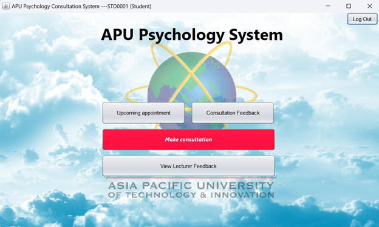
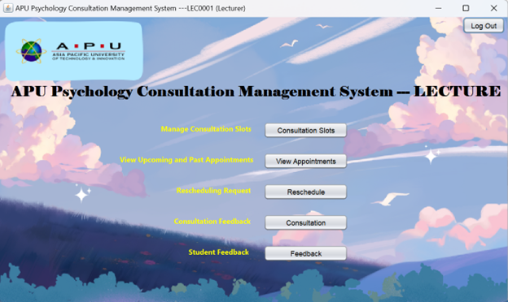

A Java desktop application that manages the full lifecycle of university psychology consultations — from a lecturer opening availability through to the feedback both sides leave once the session is done.
University counselling and academic consultation is usually coordinated over email, which scatters availability, booking requests and rescheduling across an inbox and leaves neither side with a reliable record. This system replaces that with a single desktop application where scheduling is explicit and every appointment has a traceable state.
Access is split by role and established at login. A student signs in against a student identifier and sees only what is relevant to them: their upcoming appointments, a path to request a new consultation, and the feedback their lecturer has left. A lecturer signs in against a staff identifier and instead manages the supply side — opening consultation slots, reviewing upcoming and past appointments, and handling rescheduling requests.
Feedback deliberately runs in both directions. Lecturers record notes a student can read afterwards, and students submit their own feedback on the consultation, so the record of each session is not one-sided.
The application runs without a database engine: all records persist to structured text files, which meant designing a storage format and the read, write and parse routines around it by hand.
Login resolves to a student or lecturer identity, and the interface presented is scoped to that role's permitted actions.
Lecturers publish the windows they are available for, which become the pool students can book against.
Students request a consultation against published availability and track its status from their own dashboard.
Change requests are handled as a first-class flow rather than ad-hoc messages, so a moved appointment stays recorded.
Lecturers leave consultation notes students can read, and students submit feedback of their own on the session.
Both roles can review upcoming and past appointments, giving each side a durable record instead of a scattered email trail.


I was the full-stack developer for the lecturer system — the supply side of the platform, where availability is published and incoming requests are resolved. I owned that module from the Swing interface through to the data it reads and writes.